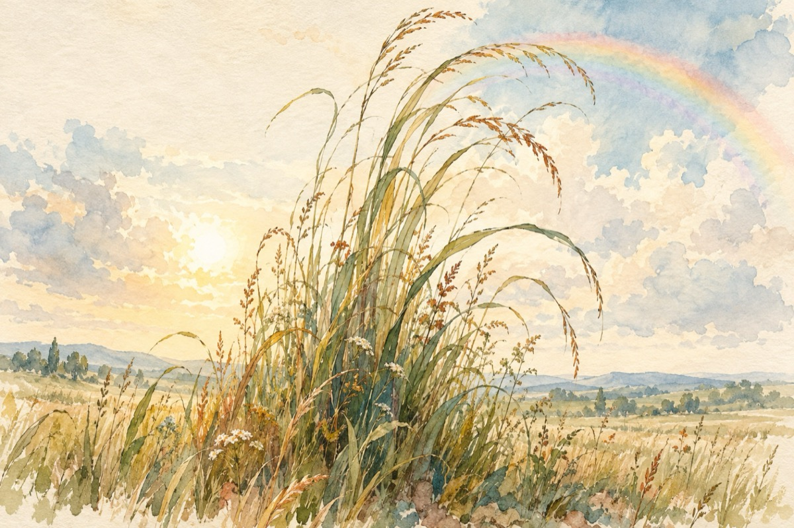

A-nnebunit iarba
A înnebunit iarba,
Până mai ieri nu se vedea.
De la o vreme, sosit-a ploaia
Iar iarba a luat-o razna!
Plecată-i sus până spre nori
Bătând din aripioare, nu e rău!
De dimineață dinspre zori
E dornică să se-nfășoare-n curcubeu
A-nnebunit iarba și nu se lasă
Să fie aprig călcată în picioare
Nu se supune nici la coasă
Să-i facă-n păr cărare
A-nnebunit iarba se pare
Umblă hai-hui pe câmpuri
A-ntâmpinat-o sfântul soare
Și-acuma-i pe astâmpuri!
Vasile Groza